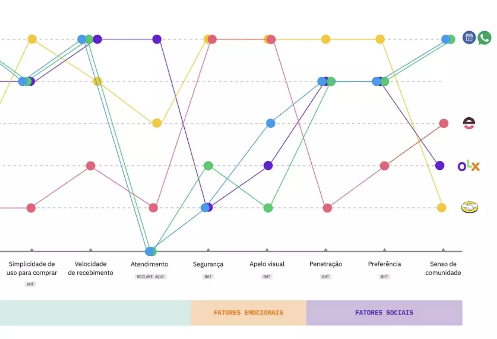
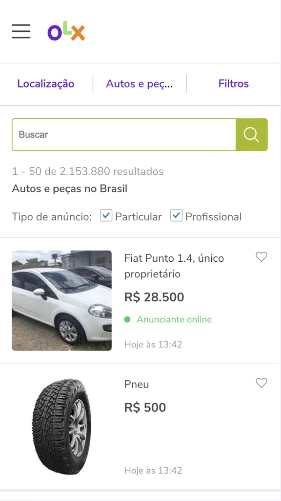
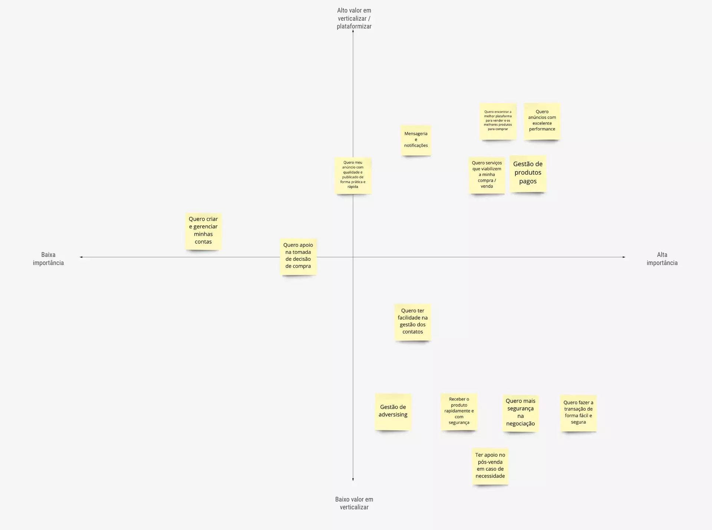
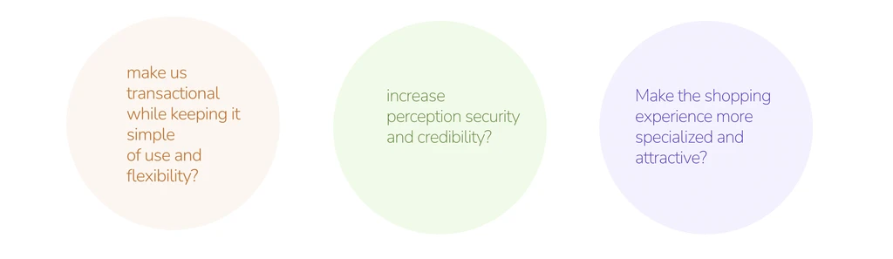
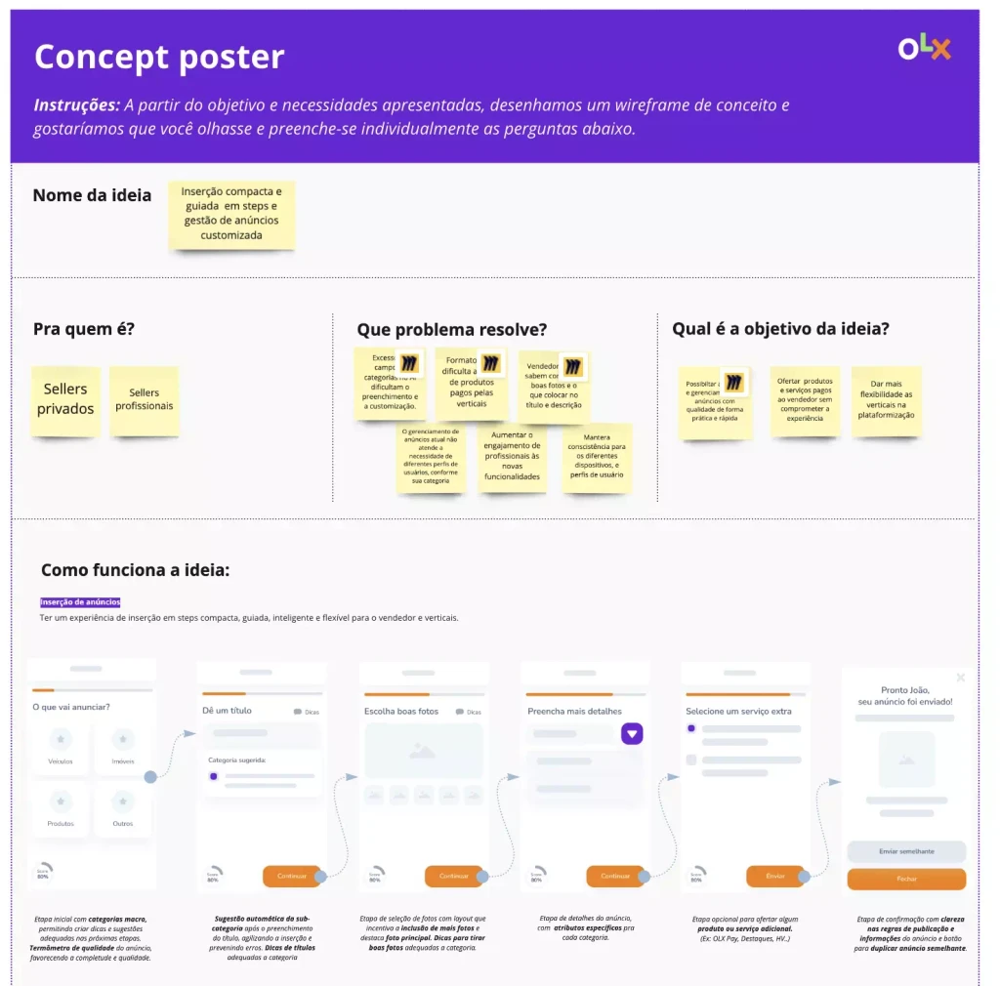
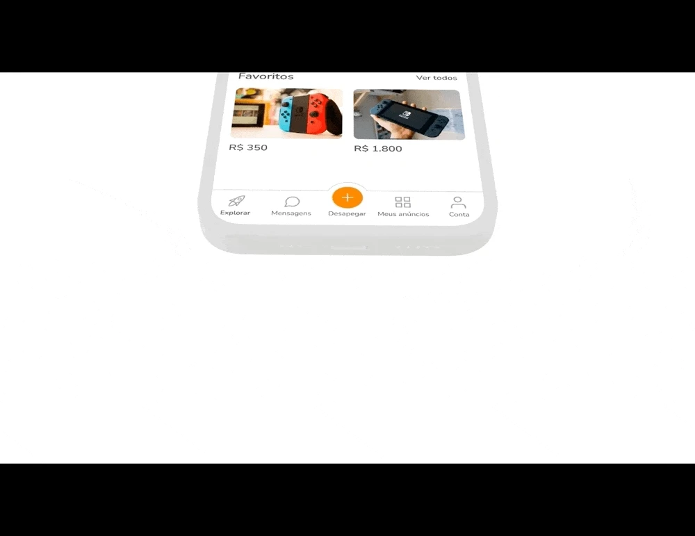
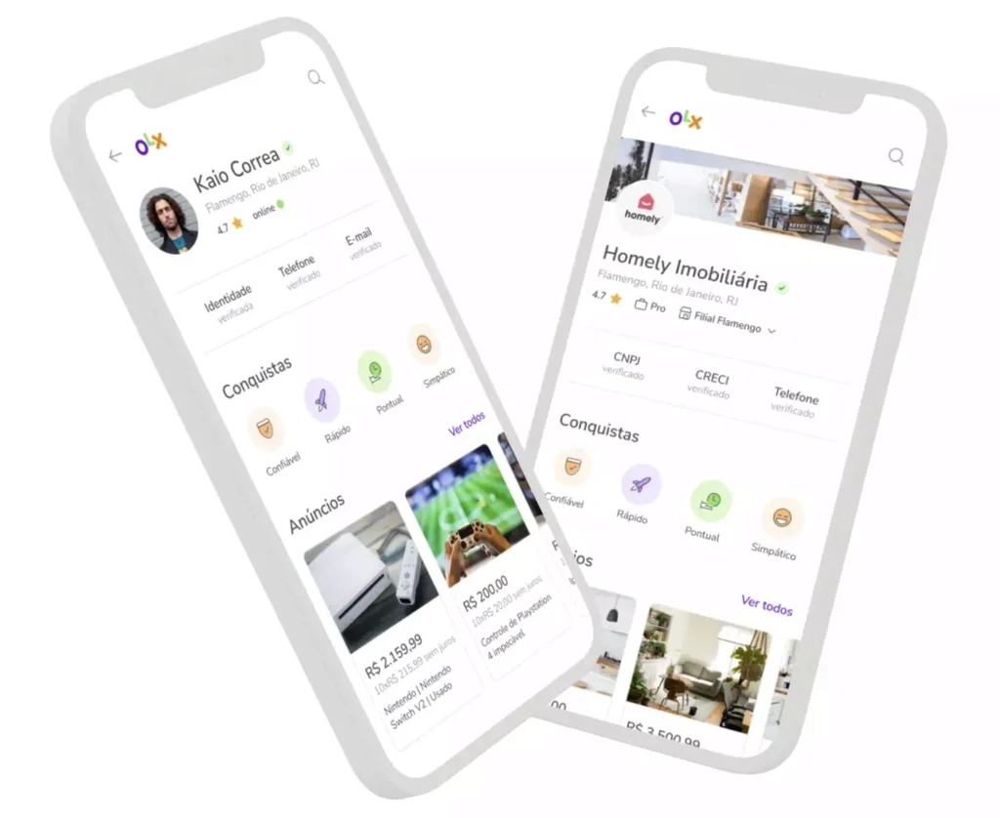
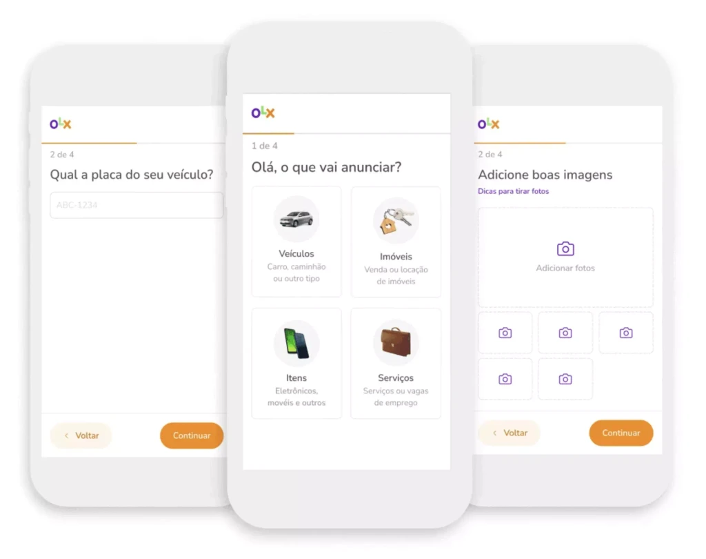

OLX Brasil · Product Design
Product
Vision
Adapting to a new transactional model
In a scenario of adaptation of the company to the transactional model of the marketplace, there was a need to understand the new market, prioritize strategic user pain points and propose a new experience for the platform.
Market
perception
Strategic analysis of product perception by users, compared to other similar players. Functional, emotional and social factors were considered in the study.


Lack of visual appeal and usability problems
Old fashioned interface, not following market trends and increasing the feeling of insecurity.
Pains and needs
Prioritization of pain points in buyer and seller journeys, in private and professional profiles.


Co-creation workshop
Co-creation workshop involving stakeholders and technology teams. Participants were divided into groups and generated low-fidelity prototypes at the end of the dynamic.

Testing with real users
The prototypes generated in the dynamics had a quick and remote conceptual validation with real users and segmented by category and region. After analyzing the tests, adjustments and visual refinements were made to the interface and the teams from each vertical were responsible for the adoption and monitoring of the new proposals.
A new experience
Simple navigation
Simpler, more objective and accessible way of navigating. The goal is to highlight the features on all platforms, ending with inconsistencies.

Communication with quality
Chat, notifications and support in a single, easy-to-access location for better contact management. Communication by audio and video call, simplifying negotiation between buyers and sellers.
Transaction flexibility
Delivery mode choice feature, giving both buyer and seller flexibility and security.
Customization for user profiles
Personalized account page that provides access to the most relevant parts of OLX, considering both private and professional profiles.
Reliability and security
Reliable and safe environment for everyone, seeking to eliminate fraudulent users without harming the experience on the platform.

Diverse inventory and more user control
Quick and specialized filters and ad cards with different formats to make it easier to choose the right one.
Ease of use for the seller
Ad insertion specialized by vertical and in steps, optimizing the seller's journey.

Results that matter
+0%
Overall conversion
+0M
User sessions
+0%
Total Buyers
+0%
User satisfaction
+0K
Total Replies
+0%
Checkout opens